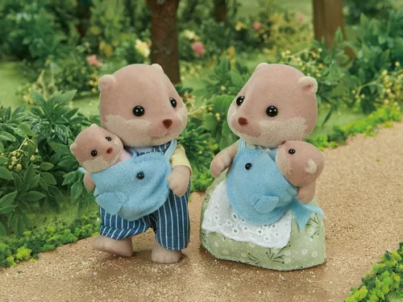
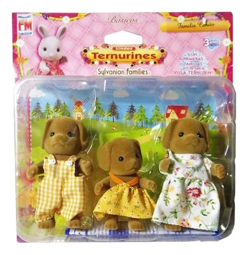

Debido a su naturaleza coleccionable y su atención al detalle, los Sylvanian Families son populares entre los coleccionistas de juguetes y miniaturas. Algunos conjuntos
y figuras raras pueden alcanzar precios elevados en el mercado de colecciones.
Los Sylvanian Families, tambíen son conocidos como Calico Critters

Los Sylvanian Families han inspirado series de animación, películas y libros que exploran las aventuras y las historias de los personajes. Estas producciones amplían el universo de los Sylvanian Families
y ofrecen más oportunidades para que los niños se sumerjan en su mundo imaginario.

Antes en méxico, eran llamados "Ternurines" y se veían algo así: